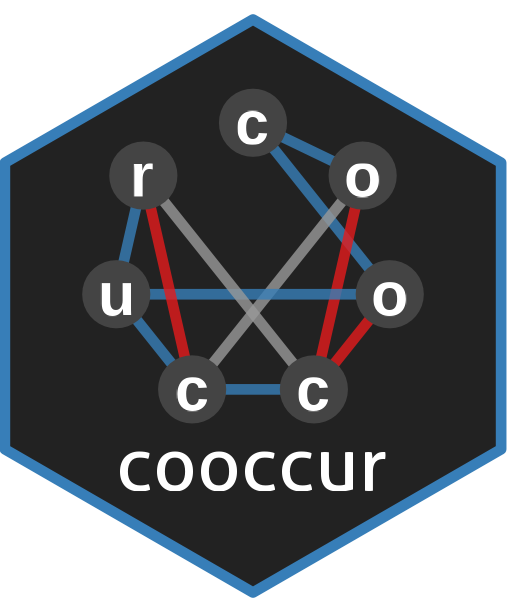

Input formats
Written by Mohammed Saqr and Sonsoles López-Pernas
Source:vignettes/articles/input-formats.Rmd
input-formats.RmdA co-occurrence network is defined by its transactions: the units within which items are counted together. A transaction can be an article and its keywords, a film and its genres, a cast and its actors, a basket and its products, or a session and the states a learner passed through. The definition of the network does not depend on how the transactions are stored, yet the same transactions reach an analyst in many shapes. A bibliographic export stores keywords as one delimited string per article; a relational database stores one row per item and document; a document-term matrix stores one column per item; sequence data store one column per time point.
cooccurrence() reads each of these shapes and builds the
same network from them. The shape is detected from the arguments:
field and sep for a delimited column,
field and by for a long table,
vars for a one-hot table, field = "all" for
wide sequences, and no argument at all for a list of transactions or a
binary table. This guide builds the IMDb genre network from five of
these shapes, shows that the networks are identical, and covers the
formats that need their own arguments: several delimited columns and
weighted long tables. Ordered sequences, sliding windows and raw event
logs have their own guide, Sequences, windows
and event logs.
Data
movies holds 1,000 highly rated films from the IMDb
non-commercial datasets, one row per film. The roles of its columns in
this guide:
-
Transaction:
tconst, the IMDb title identifier. -
Items:
genres, the genres of the film as one comma-delimited string. -
Not used here:
primaryTitle,startYear,decade,averageRatingandnumVotes.
actors is a long table with one row per actor and
film:
-
Items:
actor. -
Transaction:
tconst, linking each row to a film inmovies.
A delimited column
The most common shape in bibliometric and text data stores all items
of a transaction in one string. field names the column and
sep the character that separates the items.
genres_delimited <- cooccurrence(movies, field = "genres", sep = ",")
genres_delimited
#> # cooccurrence: 22 nodes, 129 edges | density: 0.5584 | mean degree: 11.7273 | 1000 transactions
#> # similarity: none | counting: full
#> # possible edges: 231 | isolates: 0
#> # top nodes: Drama(deg=20,str=812), Comedy(deg=19,str=412), Action(deg=17,str=295), Romance(deg=17,str=237), Adventure(deg=15,str=195)
#> from to weight count
#> Comedy Drama 159 159
#> Drama Romance 131 131
#> Crime Drama 91 91
#> Action Drama 71 71
#> Comedy Romance 63 63
#> Action Crime 59 59
#> Biography Drama 59 59
#> Drama Thriller 57 57
#> Action Adventure 44 44
#> Biography Documentary 44 44
#> # ... 119 more edgesThe network has 22 genres linked by 129 edges over 1,000 films.
Comedy and Drama share the most films (159), followed
by Drama and Romance (131). Whitespace around the
separator is trimmed, empty strings and missing values are dropped, and
an item repeated within one string is counted once, so the
count column is always a number of distinct
transactions.
Several delimited columns
Items are sometimes spread over several columns, such as the author
keywords and the index keywords of a bibliographic record. Passing
several column names to field pools their items row by row
before counting. The bundled data have one genre column only, so a small
table of four articles illustrates the shape.
papers <- data.frame(
id = c("p1", "p2", "p3", "p4"),
author_kw = c("learning analytics; dashboards", "learning analytics",
"process mining; dashboards",
"learning analytics; process mining"),
index_kw = c("feedback", "feedback; self-regulation", "self-regulation",
"dashboards")
)
cooccurrence(papers, field = c("author_kw", "index_kw"), sep = ";")
#> # cooccurrence: 5 nodes, 9 edges | density: 0.9000 | mean degree: 3.6000 | 4 transactions
#> # similarity: none | counting: full
#> # possible edges: 10 | isolates: 0
#> # top nodes: dashboards(deg=4,str=6), learning analytics(deg=4,str=6), self-regulation(deg=4,str=4), feedback(deg=3,str=4), process mining(deg=3,str=4)
#> from to weight count
#> dashboards learning analytics 2 2
#> feedback learning analytics 2 2
#> dashboards process mining 2 2
#> dashboards feedback 1 1
#> learning analytics process mining 1 1
#> dashboards self-regulation 1 1
#> feedback self-regulation 1 1
#> learning analytics self-regulation 1 1
#> process mining self-regulation 1 1Feedback is never an author keyword, yet it is linked to
learning analytics in two articles because the two columns are
pooled before counting. The id column is ignored, since
only the columns named in field are read.
A long table
A long or bipartite table has one row per item and transaction, the
shape of a relational database or a tidy data pipeline.
field names the item column and by the
transaction column. The actors table has this shape.
cooccurrence(actors, field = "actor", by = "tconst")
#> # cooccurrence: 624 nodes, 4353 edges | density: 0.0224 | mean degree: 13.9519 | 401 transactions
#> # similarity: none | counting: full
#> # possible edges: 194376 | isolates: 34
#> # top nodes: Brad Rea(deg=66,str=70), Dawn Michelle King(deg=66,str=70), Kevin LaRosa II(deg=66,str=70), Michael Runyard(deg=66,str=70), Ricki Lander(deg=66,str=70)
#> from to weight count
#> Julia Bache-Wiig Robin Ottersen 3 3
#> Akash Dev Anson Antony 2 2
#> Akash Dev Antony Varghese 2 2
#> Anson Antony Antony Varghese 2 2
#> Catalina Harabagiu Cerasela Iosifescu 2 2
#> Ben Hernandez Bray Chris Ingersoll 2 2
#> Bruce Seifert Chris Sanders 2 2
#> Christiant D'Alberto Chuck Mathews 2 2
#> Christiant D'Alberto Claire Koonce 2 2
#> Chuck Mathews Claire Koonce 2 2
#> # ... 4343 more edgesThe collaboration network links 624 actors through 401 films. It is sparse (density 0.0224), and 34 actors share no film with another actor in the table. The strongest pair, Julia Bache-Wiig and Robin Ottersen, appears together in three films. The actor collaboration case study analyzes this network.
The genre network can be built from a long table too. The genre strings are split into a list with one element per film, and each film identifier is repeated once per genre.
genre_list <- with(movies, strsplit(genres, ","))
genre_long <- with(movies, data.frame(
movie = rep(tconst, lengths(genre_list)),
genre = unlist(genre_list)
))
head(genre_long, 4)
#> movie genre
#> 1 tt0118117 Drama
#> 2 tt10534996 Animation
#> 3 tt10534996 Biography
#> 4 tt10534996 Drama
nrow(genre_long)
#> [1] 2238
genres_long <- cooccurrence(genre_long, field = "genre", by = "movie")The long table has 2,238 rows, one for each genre of each film; the second film appears in three rows because it carries three genres.
A weighted long table
Some long tables carry a strength of association for each item and
transaction rather than plain presence: the probability of each topic in
a document from a topic model, or the time a learner spent on each
resource. weight_by names that column. Each pair then
contributes the product of the two weights, so that
,
while count still records the number of transactions that
contain both items.
theta <- data.frame(
doc = c("d1", "d1", "d1", "d2", "d2", "d3", "d3"),
topic = c("T1", "T2", "T3", "T1", "T3", "T2", "T3"),
prob = c(0.6, 0.3, 0.1, 0.4, 0.6, 0.5, 0.5)
)
cooccurrence(theta, field = "topic", by = "doc", weight_by = "prob")
#> # cooccurrence: 3 nodes, 3 edges | density: 1.0000 | mean degree: 2.0000 | 3 transactions
#> # similarity: none | counting: weighted
#> # possible edges: 3 | isolates: 0
#> # top nodes: T3(deg=2,str=0.58), T1(deg=2,str=0.48), T2(deg=2,str=0.46)
#> from to weight count
#> T1 T3 0.30 2
#> T2 T3 0.28 2
#> T1 T2 0.18 1The weights can be checked by hand. T1 and T3 share
documents d1 and d2, so their weight is
and their count is 2. T1 and T2 share only
d1, giving
.
Weighted input defines each item’s contribution directly, so it is
combined with full counting only: fractional and attention counting,
which derive the contribution from the number or the positions of the
items, are refused with an error.
A binary or one-hot table
A binary table has one row per transaction and one column per item,
with 1 (or TRUE) where the item is present. It is the shape
of a document-term matrix or of survey checklists. A table whose every
value is 0 or 1 is recognized without any argument.
genre_binary <- as.data.frame.matrix(with(genre_long, table(movie, genre)))
dim(genre_binary)
#> [1] 1000 22
genres_binary <- cooccurrence(genre_binary)Real one-hot tables usually carry identifier or metadata columns
beside the indicators, and their cells may hold counts rather than 0 and
1. vars names the indicator columns, in any form accepted
by select in subset(): names, a range,
positions, a negative selection, or a logical mask. Every other column
is ignored, and any non-zero value counts as present.
genre_onehot <- data.frame(movie = rownames(genre_binary), genre_binary,
check.names = FALSE, row.names = NULL)
dim(genre_onehot)
#> [1] 1000 23
genres_onehot <- cooccurrence(genre_onehot, vars = -movie)The one-hot table has one more column than the binary table, the film
identifier, and vars = -movie selects the 22 genre columns
around it.
Wide sequences
Sequence data store one row per sequence and one column per time
point, with the state at each point in the cells; this is the format of
TraMineR and tna. With
field = "all", the distinct states in each row form one
transaction. Missing values, empty strings and the void markers
% and * are removed first.
sequences <- data.frame(
t1 = c("plan", "read", "plan"),
t2 = c("read", "write", "write"),
t3 = c("write", NA, "review")
)
cooccurrence(sequences, field = "all")
#> # cooccurrence: 4 nodes, 5 edges | density: 0.8333 | mean degree: 2.5000 | 3 transactions
#> # similarity: none | counting: full
#> # possible edges: 6 | isolates: 0
#> # top nodes: write(deg=3,str=5), plan(deg=3,str=4), read(deg=2,str=3), review(deg=2,str=2)
#> from to weight count
#> plan write 2 2
#> read write 2 2
#> plan read 1 1
#> plan review 1 1
#> review write 1 1Plan and write share two of the three sequences, as
do read and write. Treating a whole sequence as one
transaction ignores order; linking only states that occur close together
is done with window, as described in Sequences, windows and event logs.
A list of transactions
The most direct shape is a list with one character vector per
transaction. The genre_list built above has this shape.
genres_from_list <- cooccurrence(genre_list)A list needs no argument at all; repeated items within an element are counted once and missing values are dropped.
One network, every format
The five genre networks were built from a delimited column, a long table, a binary table, a one-hot table with an identifier column, and a list. They describe the same 1,000 films, and their weight matrices are identical.
all.equal(as_matrix(genres_delimited), as_matrix(genres_long))
#> [1] TRUE
all.equal(as_matrix(genres_delimited), as_matrix(genres_binary))
#> [1] TRUE
all.equal(as_matrix(genres_delimited), as_matrix(genres_onehot))
#> [1] TRUE
all.equal(as_matrix(genres_delimited), as_matrix(genres_from_list))
#> [1] TRUEThe choice of format is therefore a matter of how the data arrive, not of the analysis: every similarity measure, counting method and filter applies in the same way whichever shape is read. The next step is usually the choice of a similarity measure, covered in Choosing a similarity measure.